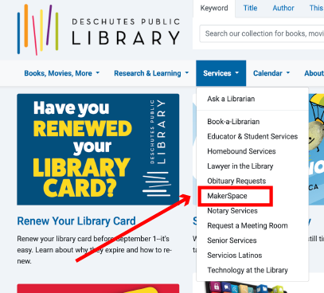
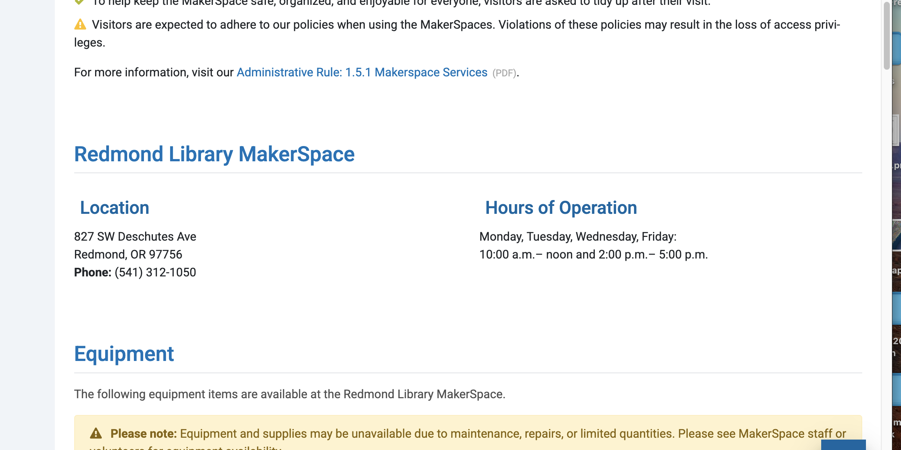
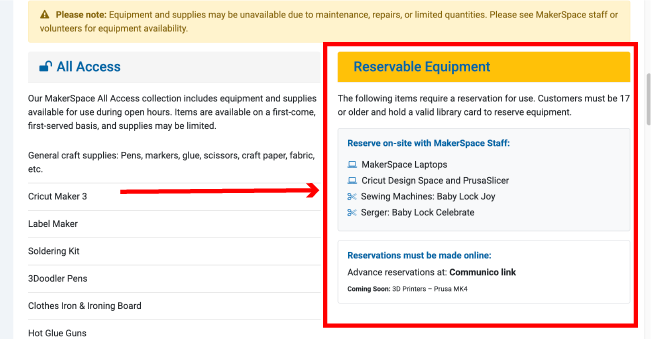

3D Printers at the Deschutes Public Library#
The pupose of this guide is to explore the basic features of the 3D printing, the core elements of the workflow when using 3D printers, and the tools that are available for creating and printing objects. This is by no means a complete guide but is intended to provide enough information to safely begin your 3D printing journey at the DPL Makespace.
DPL Makerspace: Redmond#
Lets start by making sure that you know how to find the Makerspace page on the DPL website. At this time you can access the Makerspace page via the Services tab as shown below.
{kind=link}

Fig. 1 DPL Dropdown Menu#
Scrolling down you will find the listing for the Makerspace hours. This is relevant in the context of the 3D printers since whatever projects you wish to work on will need to be comppleted during the makerspace hours.
{kind=link}

Fig. 2 DPL Makerspace Hours#
Scrolling further down there is a section for Reservable Equipment. At this moment this section is not fully implemented but this is where you will be able to reserve time on one of Makerspace 3D printers.
{kind=link}

Fig. 3 Makerspace Equipment Reservation#
High Altitude View#
Working with 3D printers is a learning process that never stops for a variety of reasons. For this presentation I want to give a clear sense of the basic processes and skills needed to get started. Once you have a very basic comfort with the process then your skills will grow as you try prints or techni that you hear about or read about on the interwebs. Be curious and you will be delighted to see your skills grow. Because it’s only 2 min long (plus the irritating ads) we’ll watch this video which is linked at the bottom of the DPL MakerSpace page.
With such a general goal for this presentation here is what we’re going to touch on.
A Short History
The Workflow
I: CAD Options
Ia: Downloading Printable Files
II: ‘Slicing’ the File
Our 3D Printers
III: Printing the .gcode
FAQ